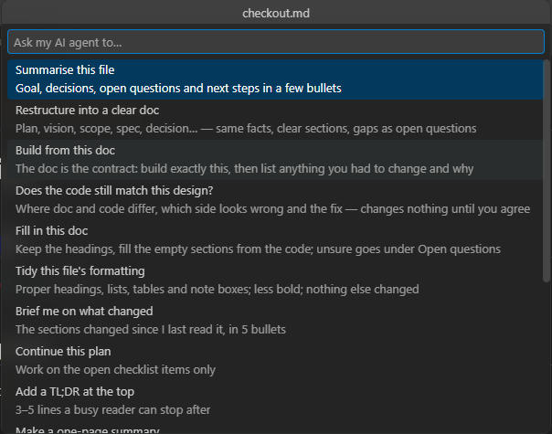
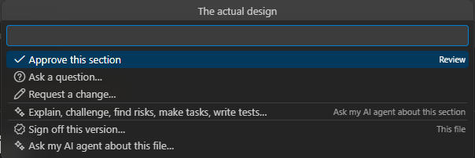
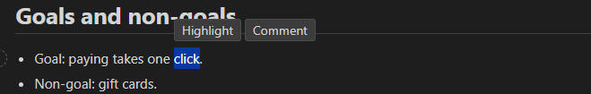
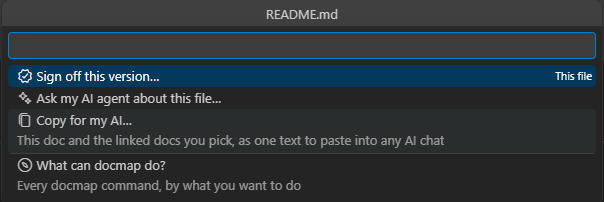
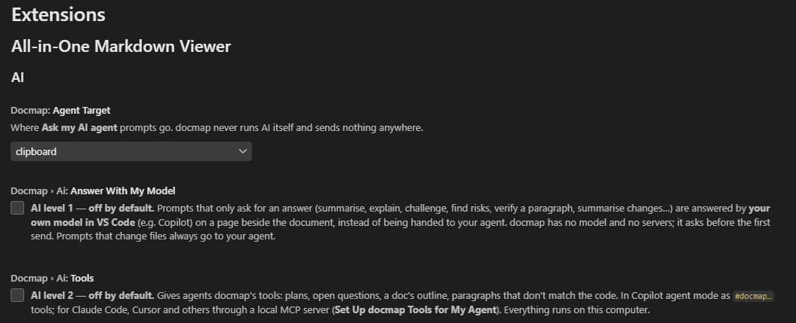
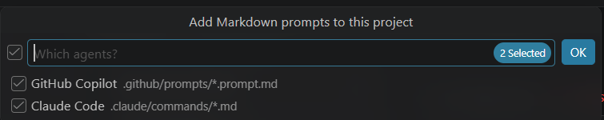
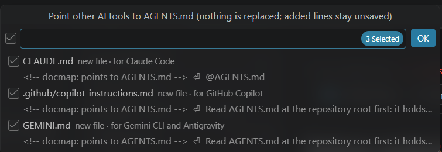

Working with AI agents
docmap has no AI of its own. It writes good prompts for the AI agent you already use (Claude Code, Copilot, Codex, Cursor…).
- Ready prompts
- Build from a doc
- Review
- Comments
- Copy for my AI
- Where prompts go
- Prompts in your project
- Your own model
- Agent tools
- AGENTS.md
- Doc map
-
Ask My AI Agent About This File
“I don't know how to ask the AI the right question.”
A menu of ready prompts: summarise, explain, challenge, find risks, turn into tasks, and more. The prompt is copied; paste it into your agent.
Where: ⋯ Ask my AI agent at the top of the page → Ask my AI agent about this file…

-
Build from this doc · Fill in this doc
“I gave the AI my design. It built something a bit different, and nobody knows why.”
Build from this doc: the agent builds exactly what the doc says and writes down every choice it had to make, and why. Fill in this doc: it fills the empty sections from the code.
Where: ⋯ Ask my AI agent → Ask my AI agent about this file… (shown for design docs and docs with empty sections).

-
Review a doc and send it to your agent
“I have notes on five sections of the AI's plan.”
Mark sections as you read (approve, question, request a change), then send all your notes to your agent as one prompt.
Where: hover a heading on the page → ⋯. To send: ⋯ Ask my AI agent → Send my review to my AI agent.

-
Comment on any words
“My note is about one sentence in the AI's plan, not the whole section.”
Select words on the page → Comment → type your note. The words get a dashed underline and a ✎; point at them to read your note. Send my review to my AI agent sends every comment with the words it is about.
Where: select text on the page; the Comment button appears next to Highlight.

-
Copy for my AI
“I want my AI chat to see this doc and the two it links to, without copying each one.”
Copies this doc plus the linked docs you tick, as one text ready to paste into any AI chat, and tells you how big it is (“about 100 words”).
Where: ⋯ Ask my AI agent at the top of the page → Copy for my AI… → tick the linked docs → OK.

-
Where prompts go
“Where does the prompt end up?”
It is copied, with the message “Prompt copied — paste it into your AI agent”. docmap sends nothing anywhere. Copilot users can have it open in Copilot Chat instead.
Where: Settings → search docmap agent target → auto for Copilot Chat.

-
Add Markdown Prompts to This Project
“I want these prompts as commands in my agent.”
Saves docmap's prompts into your project, so they show up when you type
/in Copilot Chat or Claude Code.Where: Command Palette → Add Markdown Prompts to This Project.

-
Answer with my own model
“I just want a quick summary, without leaving VS Code.”
Your own model in VS Code (e.g. GitHub Copilot) writes the answer on a page next to your doc. Off by default; your text goes only to your model, after you agree.
Where: Settings → search docmap ai → Answer With My Model.

-
Tools for your AI agents (standalone docmap-mcp & SKILL.md)
“My agent should check the plans before it writes code — even outside VS Code.”
Your agent can call four read-only local stdio MCP tools:
docmap_plans,docmap_open_questions,docmap_outline, anddocmap_check_doc. Also ships as the standalonedocmap-mcpnpm package (zero runtime dependencies, zero network, folder-confined) with a ready-to-useSKILL.mdfor Claude Desktop, Claude Code, Codex, Cursor and Antigravity.Where: What Can docmap Do? → Set Up docmap Tools for My Agent…, or run
npx -y docmap-mcp /path/to/project.
-
Point Other AI Tools to AGENTS.md
“I use three AI tools, and keep copying the same rules into each.”
Keep your rules in one
AGENTS.md. docmap adds one pointer line toCLAUDE.md, Copilot's and Gemini's files. Nothing is replaced.Where: What Can docmap Do? → Point Other AI Tools to AGENTS.md…

-
Write Doc Map for Agents
“My AI agent scatters new docs all over the project.”
Adds a table to
AGENTS.mdsaying where each kind of doc lives and which shape to follow, and to read the design before building.Where: Command Palette → Write Doc Map for Agents.

Want step-by-step examples to try? In VS Code press Ctrl+Shift+P and run Help (All Features).